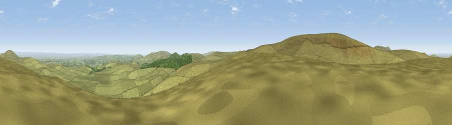

Viewpoint near Throwleigh
#7027 in England · top 10% of its area beats it · near ThrowleighThe view, rendered

A 360° render of this exact spot computed from the terrain model, tree cover and land cover — summer colours, afternoon light, calibrated against photographs of famous viewpoints. Real trees, hedges and buildings will differ in detail.
The panorama
Grey silhouette: terrain skyline in each direction (720 bearings, Earth curvature and refraction included). Dashed green: skyline with trees (+15 m) and buildings (+8 m) as obstacles. Blue strip: how far the ground is visible on each bearing.
Where the view opens
Wedge length = distance to the farthest visible ground on that bearing (vegetation-aware). Rings at 10, 25 and 50 km.
What fills the view
93% grassland · 6% woodland · 1% cropland
Angular shares of the visible panorama (visual magnitude), not map area. Landscape diversity 0.13 (0–1 Shannon).
Key numbers
More beautiful places nearby
The staircase of upgrades: each row has a higher view potential than everything closer. Driving times are estimates from straight-line distance, calibrated against real road routing — check an actual route before setting out.
| Place | Direction | Drive | Score |
|---|---|---|---|
| Hangingstone Hill | W · 1 km | ~4 min | 69.9 |
| Viewpoint near Chagford | E · 4 km | ~8 min | 71.2 |
| Viewpoint near South Zeal | N · 6 km | ~12 min | 75.0 |
| High Willhays | WNW · 6 km | ~12 min | 76.4 |
| Yes Tor | NW · 6 km | ~13 min | 78.5 |
| Viewpoint near North Bovey | ESE · 11 km | ~20 min | 79.3 |
| Cairn | ESE · 15 km | ~27 min | 79.8 |
| Viewpoint near Haytor Vale | ESE · 16 km | ~28 min | 80.1 |
50.65998, -3.94001 · source: screening · position refined by local search. Computed location — check access rights before visiting.